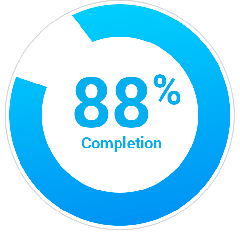
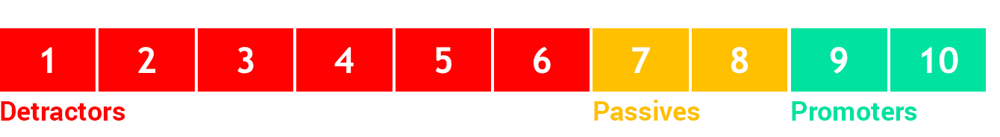
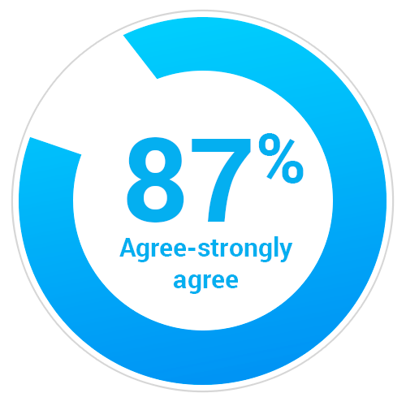
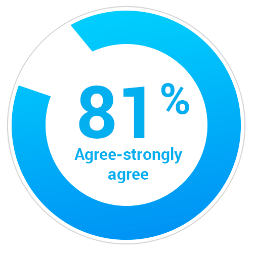
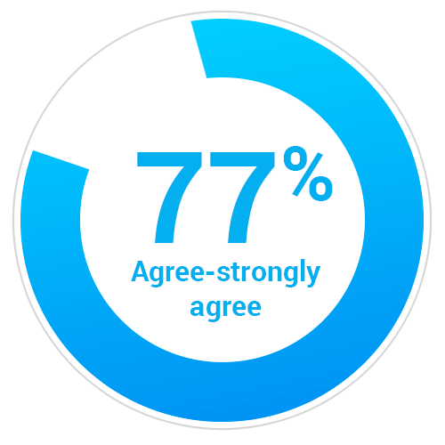
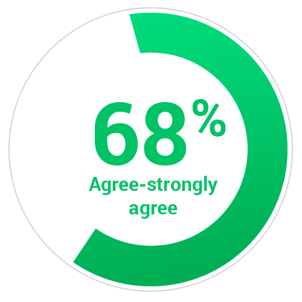
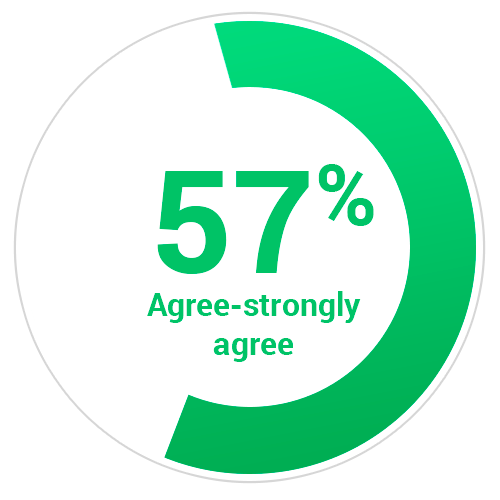

Participation

88% of you completed the survey! That's 13% higher than the average participation rate of 75%.
Our employee Net Promoter Score (eNPS)
What is an eNPS?
An employee Net Promoter Score measures whether employees would recommend their company as a place to work.
45
% of GA employees gave a 9 or a 10 (with 10 being the highest score) indicating strong advocacy for Global Atlantic as an employer.
26
is our total eNPS - that's four points higher than the average eNPS of 22.
How is the eNPS calculated?
(
410 Promoters -
172 Detractors) ÷ 914 total responses =
26 eNPS.Note: 332 Passives disregarded.
To get the eNPS, 'detractors' (those who responded with a 1-6 on the survey) are subtracted from 'promoters' (those who responded with 9-10) and that number is divided by the number of total responses. 'Passives' (those scoring a 7-8) are excluded from the calculation.

Our key strengths

I am proud to work at Global Atlantic Financial Group.

I have great confidence in the future of Global Atlantic Financial Group.

My manager has the capability to help me succeed.
Our key Opportunities

I am proud to work at Global Atlantic Financial Group.
I have great confidence in the future of Global Atlantic Financial Group.

My manager has the capability to help me succeed.